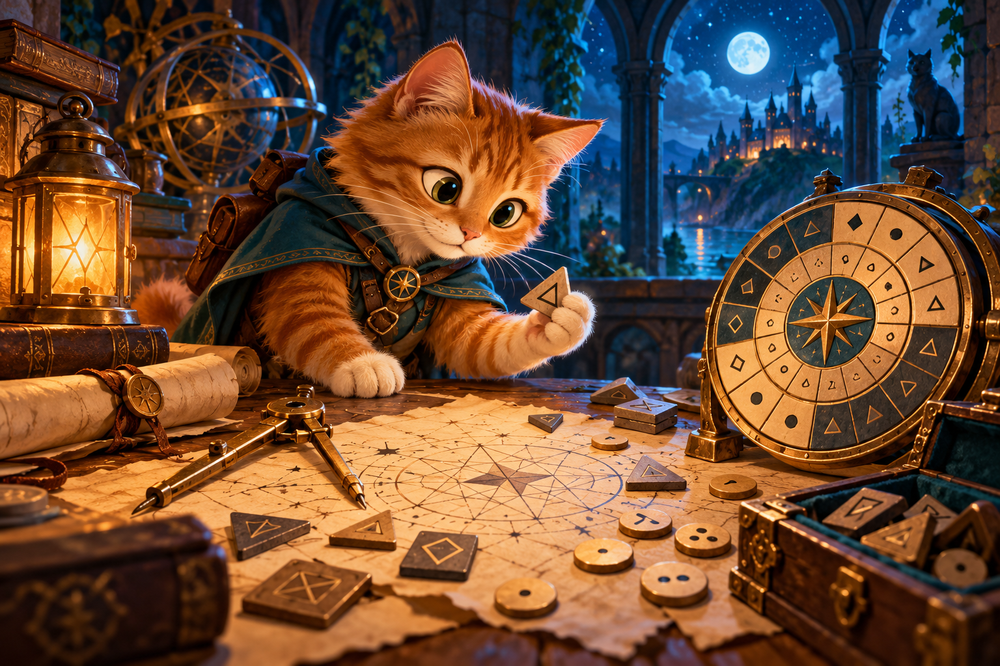

Діалог із Криптокотом · веббот
DRAW · Графічні шрифти
Читайте повідомлення, досліджуйте шифри та залишайте відповіді. Підказки допоможуть рухатися далі.

Почнімо знайомство
Прогрес зберігається лише на цьому пристрої. Збережіть фінальний звіт.
Як до вас звертатися?
Це навчальний сценарій із готовими правилами перевірки. Власні пояснення оцінює викладач. Для роботи не потрібен Telegram або обліковий запис.
Матеріали місії
Відкрити папку матеріалів на Google Диску · Відео та презентація на сайті
Передайте результати викладачу
Звіт не відправляється автоматично. Заповніть форму та натисніть у ній «Надіслати». Про прийняття відповіді повідомляє сама Google-форма.